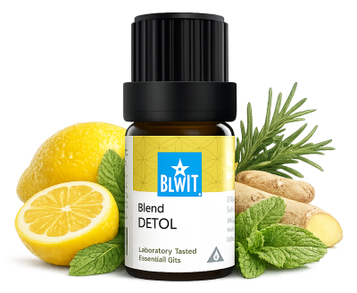

Játra a žlučník
pro lehkost a čistotu zevnitř
Tlak v pravém podžebří, ztížené trávení tučných jídel, pocit těžkosti nebo potřeba podpořit přirozený detox. Ukáži vám, jak přirozeně podpořit játra a žlučník.

pro lehkost a čistotu zevnitř
Tlak v pravém podžebří, ztížené trávení tučných jídel, pocit těžkosti nebo potřeba podpořit přirozený detox. Ukáži vám, jak přirozeně podpořit játra a žlučník.

Směs pro podporu jater a přirozené detoxikace.
Pomáhá při tlaku v oblasti jater, podporuje jejich regeneraci a napomáhá očistě organismu.
💧 Jak použít: zředěný v nosném oleji (např. jojobový) nanes na pravou stranu břicha pod žebra jemnými krouživými pohyby — ideálně ráno nebo po jídle.
Zjistit více →💧 Jak použít: zředěný v nosném oleji nanes na pravou stranu břicha pod žebra jemnými krouživými pohyby po jídle.
Chci podpořit žlučník💧 Jak použít: zředěný v nosném oleji nanes na břicho jemnými krouživými pohyby po jídle.
Chci podpořit trávení💧 Jak použít: zředěný v nosném oleji nanes na břicho jemnými krouživými pohyby nebo přidej 3–5 kapek do difuzéru.
Chci harmonii tráveníJátra jsou tichými hrdiny našeho těla — pracují nepřetržitě a málokdy si stěžují. Dopřejte jim péči dřív, než se ozve problém. Pravidelná podpora je vždy lepší než řešení krize.
Mohlo by vás také zajímat: